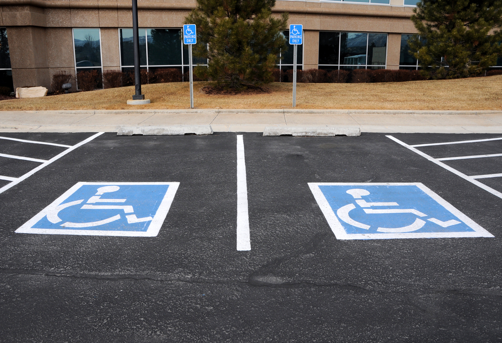

Project Idea
Overview
For the project, we want to develop a smartphone app called Parker, which aims to help people in Australia find parking lot with available parking space when they are driving out. This app would be available both in iOS and Android system. There is only one goal of our project app – find a parking space.
Motivation
A few years ago, I have spent time together with my family in a weekend
when we first came to Melbourne. It took us 20 minutes circling around
the parking lot outside the shopping mall to find a parking space. We
eventually realised that the parking lot was full, so we can only
drive out and find another parking lot. I believe that many people
have meet the same situation as we did. 
When looking for parking space outside, there are many problems such as:
- Time
- Distance
- Cost
- Accessibility
We can easily find the causing of the problems above according to the data from Statista There are approximately 20.14 million motor vehicles in Australia as of January 2021, and the population is 26.02 million. Around 77.4% of Australian may choose to drive out during weekends of holiday.
An article published in De Gruyter on 10th March 2020, by Jan Lizbetin and Ladislav Bartuska talked about the issue about lacking parking spaces for road freight transport in cities and dealt with the issue of rest area's location for road freight vehicles in the selected area. Static traffic (car parking) is one of the most difficult aspects of urban transportation. Insufficient capacity or inadequate equipment, for example, cause problems in parking places for big freight vehicles in urban locations. Regional designs for the siting of truck parking lots have not been created in the Czech Republic; rest areas are primarily built on motorways. Drivers are compelled to use other routes to find alternate parking places, jeopardising the safety of the cargo being transported. Due to a scarcity of such parking spots, drivers are forced to break the European Agreement Concerning the Work of Crews of Vehicles Engaged in International Road Transport (AETR) or, because of this agreement, park the truck before it can be loaded.
Decription
To achieve our goal, the app should contain two main functions:
- Detecting the parking lot and show the empty parking spaces
- A navigation system to guide the user to the destination
How do we detect the parking lot?
We found an article by Mohit Saini (Dec 3, 2019), which teaches us to build a parking space detection system. In general, there are 3 steps to do this:
- Detection of parking spots
- Detection of cars
- Calculate IoU (Intersection Over Union)
How will the navigation system work?
This part will be like a map app such as google map, there will be a search bar in the home page. Once the user types the destination into the search bar, nearby parking lots will be shown in the map. Each parking lot has a colour bar next to it. Red means it is full or over 80% parking spaces are taken, orange means only 40% parking spaces left in the parking lot, yellow means the rest parking spaces are around 50%, and green means there are still a lot parking spaces in this parking lot. It gives the user an intuitive overview of the parking lots nearby.
Users can see details of the parking lot by clicking it such as opening time, fees, contact method and so on. Also, to avoid a clash such as users choose the same parking space accidentally, Parker will ask users for their location, then each users’ position will be shown in the map. There will be a thinner line with lighter colour connects the other user to their own destination parking lots so that you can avoid parking lots with heavy traffic flow. The user will also be counted in after choosing the parking lot. After choosing which one to go, Parker will start the direction. However, Parker will not directly lead the user to the exact parking space in the parking lot, instead, Parker will show the recommended floor of the parking lot to go, which has most empty parking spaces.
Some advanced functions:
Nowadays, people's environmental awareness is getting stronger and stronger, more people choose to buy an electric car instead of traditional car burns petrol. Therefore, users of Parker can set a filter to only see parking lots with charging pile. Also, the filter can do more than just search for charging piles, users can set the filter to find which parking lots meet the requirements they need.
The classic theme of Parker would be adapted to the user’s phone theme. But the user can change the app’s theme anytime in settings. Besides some basic reset themes, users can customise the app interface as they like freely. When the users open Parker for the first time, there will be a guidance teaching people to use this app. Users can review the guidance anytime if they forget how to use the app.
In case the users meet problems or bugs while using Parker, they can contact us and describe the bugs or problems through the “Report” button. Me and my partners (if I have) will look through the feedbacks and solve the problems to make users’ experience better while using Parker.
Parker can also assist another app such as Uber. Uber and other rideshare companies are becoming more popular and less people within cities are buying cars, but we've all had issues where you call an uber and you see come close to you, but it cannot stop because it is not legally allowed to park in front of you, so it must circle the block again, searching for a safe place to park. By being able to identify safe, available parking spaces before you arrive at your destination, you can improve the rate at which people arrive at their destination and you make the entire process safer and more convenient. less time wasted. less money wasted; less fuel wasted.
Accessibility, as is mentioned above is another point. An article published in nature on 8th October 2020 discussed about parking accessibility. For example, some elder people use a walking stick and sometimes a walking frame. Some people may require wheelchairs. but there is always the possibility that once you arrive at wherever you are going, the accessible parking spots will already be taken. and sometimes it is the case that these accessible parking spots are taken by people who do not even need to take them. So, you end up having to park further away, which, over time, has an impact on both physical and mental wellbeing. By being able to plan and determine whether your accessible parking spots are taken, you might be able to still determine if there are other non-disabled that would still be close enough to your destination, so you do not end up straining or injuring yourself.
Wheelchair users often need larger parking spots to unload their wheelchair. when a disabled parking spot is taken, their only other option is to use normal parking spots but if they could plan where they might find 2 parking spots next to each other, it would serve the same purpose as a disabled parking spot.
Users’ experience:
To use this app, users just need a phone that can connect to network and that is all. This app will be published both on iOS and Android app store. There is no need to worry about do not know how to use this app. The guidance will be detailed to make sure the elders also know how to use it.
However, we will need to design a survey in the future to get users’ feedback so that we can make Parker better.
Tools and Technologies
Python:
We will use Python to create the parking lot detecting system, with the help of Saini’s article. We will also use Python to build the app itself. In this part, we found an article by Mike Driscoll, which has a detailed tutorial of how to create an app by using package Kivy.
SQLite:
To build an app, a database system is necessary. We will need a database for storing all the parking lots’ details with the help of SQLite. In the beginning, we will design an ER-Diagram through Lucidchart to illustrate how the entire system work, then we will create the database in SQLite.
Figma:
At the beginning of this project, we will create a prototype for Parker with Figma. This requires our knowledge of User Centre Designed and User experience (UX). This can also help us improve Parker by gathering potential users’ feedback through the prototype.
Anticipated problems:
Acquiring licenses for the data from Google, Vicroads, parking data from local councils, getting the machine learning to analyse probabilities correctly. Communicating other apps such as Uber may incur a clash in corporate policy and some network security concerns when sourcing to a third-party entity.
Outcome
If our project is successful, people those who use Parker’s life will be more convenient. They can easily find suitable parking lots that meet their requirements, no need to waste time in tossing among parking lots. This will solve problems of finding empty parking spaces when driving out. We would be immensely proud of Parker if it does succeed in the future.